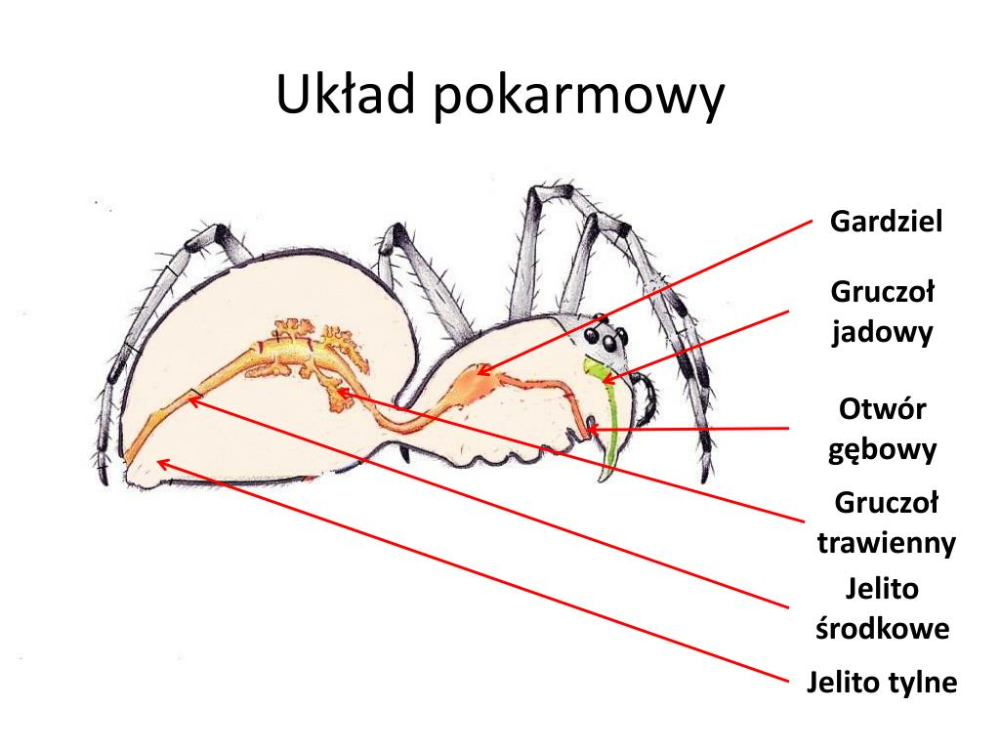
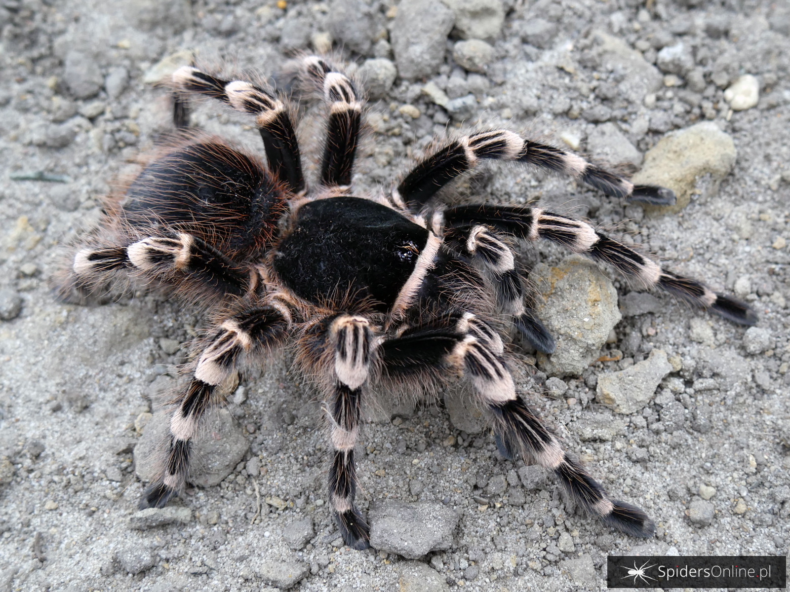
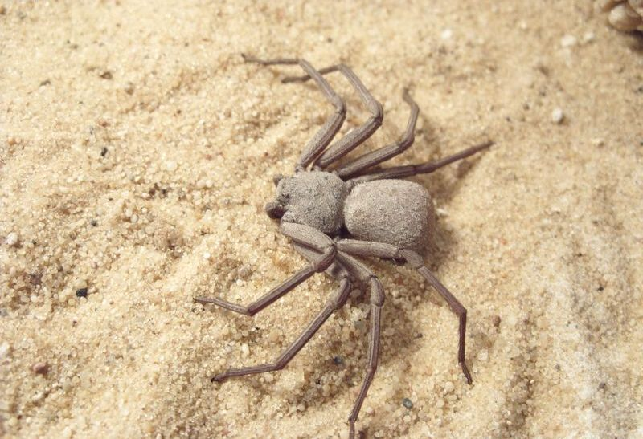
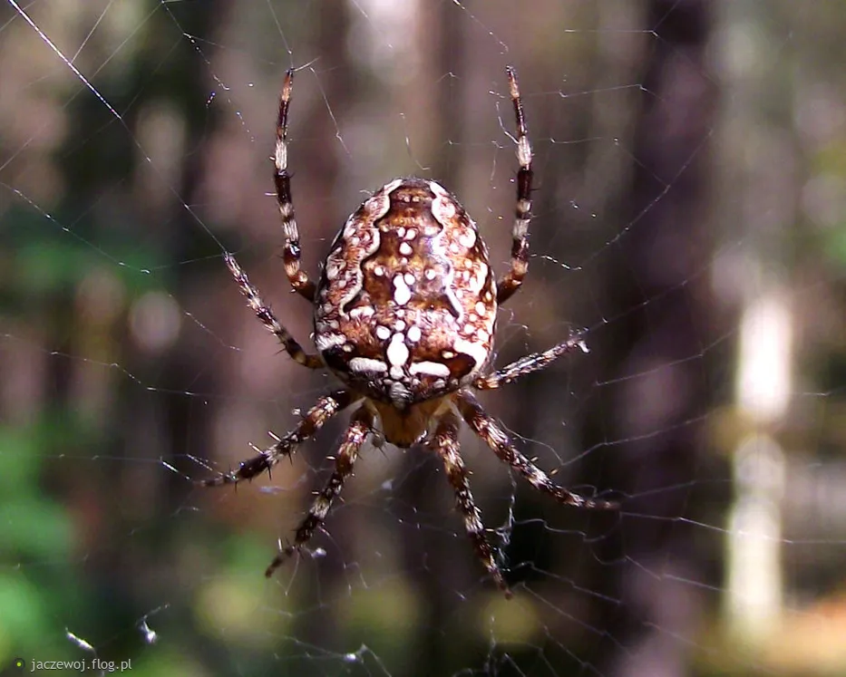
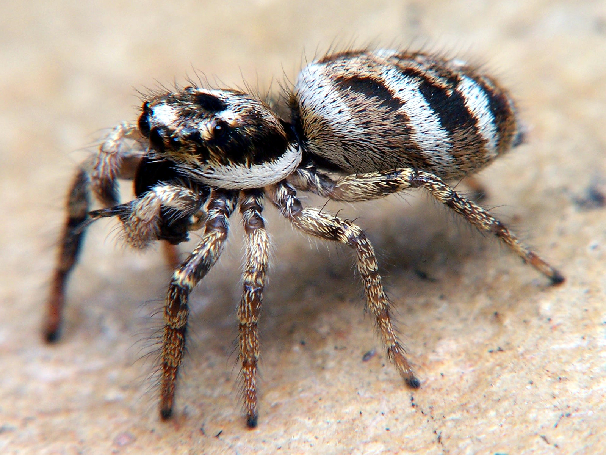
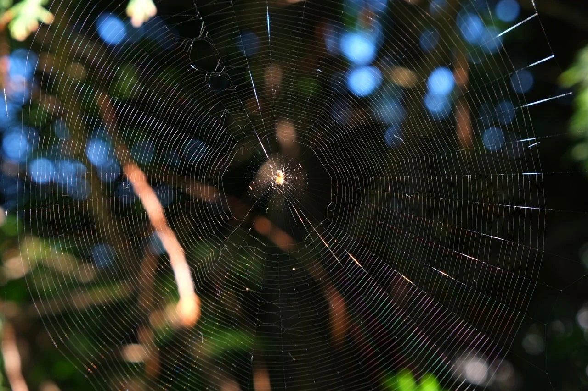
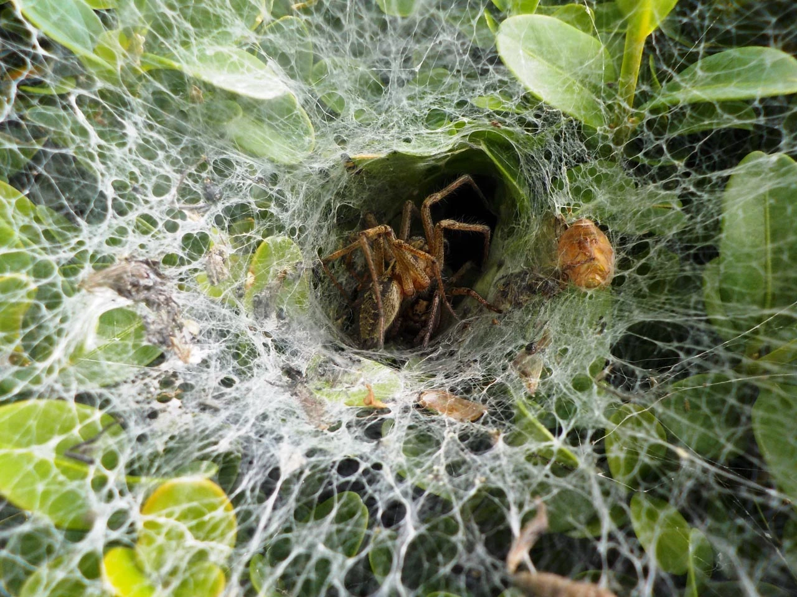

Anatomia Pająków
Budowa Ciała
Pająki to jedne z najbardziej fascynujących stworzeń na Ziemi, wyróżniające się unikalną budową ciała, która umożliwia im przetrwanie w różnych środowiskach. Ciało pająka jest podzielone na dwie główne części: głowotułów i odwłok.
To przednia część ciała, która zawiera oczy, narządy gębowe, nogogłaszczki (struktury przypominające szczęki), a także osiem nóg – cechę charakterystyczną wszystkich pająków. Co ciekawe, oczy pająków są bardzo różnorodne pod względem liczby i budowy, umożliwiając różne poziomy widzenia w zależności od gatunku. Niektóre pająki, takie jak skakunowate, mają doskonały wzrok, co pomaga im w polowaniu, podczas gdy inne gatunki, jak pająki sieciowe, polegają bardziej na wibracjach sieci niż na widzeniu.
Część ciała pająka połączony z głowotułowiem cienkim przewężeniem zwanym stylikiem, zawiera najważniejsze narządy wewnętrzne pająka, takie jak układ trawienny, oddechowy i rozrodczy. Odwłok zawiera również gruczoły przędne, które produkują pajęczynę. Pajęczyna jest wykorzystywana przez pająki do różnych celów – od budowy sieci, przez tworzenie kokonów na jaja, aż po zabezpieczanie schronienia.
Pająki posiadają również skórkę zewnętrzną, zbudowaną z chityny, która pełni funkcję ochronną i pozwala im przeżyć w ekstremalnych warunkach środowiskowych. Skórka ta nie rośnie wraz z pająkiem, dlatego też okresowo musi zostać zrzucana w procesie zwanym linieniem. Linienie pozwala pająkowi na wzrost i odnawianie uszkodzonych części ciała, co jest szczególnie przydatne, gdy pająk straci kończynę – nowa kończyna może się z czasem zregenerować w trakcie kolejnych linień.
Układ Pokarmowy
Układ pokarmowy pająków jest dostosowany do specyficznego sposobu odżywiania, który różni się od większości zwierząt. Pająki są drapieżnikami, a ich układ pokarmowy przystosowany jest do trawienia pokarmu w formie płynnej. Proces trawienia rozpoczyna się już na zewnątrz ciała pająka, co umożliwia im spożywanie posiłków w formie łatwiejszej do przyswojenia.

Po schwytaniu ofiary pająk wpuszcza do niej enzymy trawienne, które rozpuszczają tkanki wewnętrzne zdobyczy. Następnie, za pomocą specjalnych narządów gębowych zwanych chelicerami, pająk zasysa płynną zawartość ciała ofiary. Dzięki temu pająki są w stanie pozyskać wartościowe składniki odżywcze bez konieczności żucia pokarmu, co jest niemożliwe w ich przypadku, ponieważ nie posiadają typowych zębów ani struktur do rozdrabniania pokarmu.
Po przejściu przez jamę gębową pokarm trafia do gardzieli, gdzie jest zasysany do żołądka ssącego – charakterystycznego elementu układu pokarmowego pająków. Żołądek ten pełni funkcję pompy, umożliwiając zasysanie płynnego pokarmu do przewodu pokarmowego. Dalej pokarm przemieszcza się do jelita środkowego, gdzie następuje wchłanianie niezbędnych substancji odżywczych. Niestrawione resztki są przesuwane do jelita tylnego, a następnie wydalane przez otwór odbytowy.
Dzięki specyficznej budowie układu pokarmowego pająki są w stanie zaspokoić swoje potrzeby żywieniowe, jednocześnie zużywając minimalną ilość energii na trawienie. Pozwala im to przetrwać długie okresy bez pożywienia – niektóre gatunki pająków potrafią przeżyć bez jedzenia nawet kilka miesięcy, oczekując na kolejną zdobycz.
Typy Pająków
Pająki Pustynne
Pająki pustynne to niezwykła grupa pajęczaków przystosowana do przetrwania w jednych z najtrudniejszych środowisk na Ziemi – gorących, suchych pustyniach, gdzie dostęp do wody i schronienia jest ograniczony. Aby sprostać tym warunkom, pająki pustynne wykształciły szereg cech i zachowań umożliwiających im przeżycie w skrajnie niesprzyjających warunkach klimatycznych.

Jednym z najbardziej znanych przedstawicieli pająków pustynnych jest Ptasznik Białokolankowy (Aphonopelma chalcodes), występujący w pustynnych rejonach Ameryki Północnej. Pająk ten potrafi wytrzymać wysokie temperatury dzięki aktywności nocnej – w dzień skrywa się w norach lub szczelinach, wychodząc na polowanie dopiero po zachodzie słońca, gdy temperatury spadają. Taki tryb życia pozwala mu unikać przegrzania oraz nadmiernej utraty wody.
Wiele gatunków pająków pustynnych posiada również zdolność do składania zapasów wody. Poprzez przystosowanie metaboliczne ich organizm wytwarza minimalną ilość odpadów azotowych, co pozwala im na oszczędzanie wody. Ponadto, pająki te mogą pozyskiwać wodę bezpośrednio z pożywienia, co jest niezbędne w środowiskach, gdzie woda jest praktycznie niedostępna.

Innym wyjątkowym gatunkiem pustynnym jest Karaczanek (Sicarius sp.), znany z występowania na pustyniach Afryki Południowej. Pająki z tego rodzaju mają niezwykle płaskie ciała, dzięki którym mogą się wtapiać w piasek, co zapewnia im kamuflaż oraz ochronę przed upałem. Karaczanki polują z zasadzki – zakopują się w piasku i czekają na ofiarę, którą mogą unieruchomić jadem o silnych właściwościach neurotoksycznych.
Pająki pustynne są dowodem na niesamowitą zdolność adaptacji natury. Ich zachowania i budowa ciała ewoluowały w taki sposób, aby maksymalnie wykorzystać minimalne zasoby dostępne na pustyni, co czyni je jednymi z najbardziej odpornych i fascynujących stworzeń w świecie pajęczaków.
Pająki Leśne
Pająki leśne zamieszkują wilgotne i zróżnicowane środowiska lasów, gdzie znajdują schronienie i obfitość pokarmu. Dzięki warunkom, jakie oferuje las – cienistym i wilgotnym przestrzeniom, licznym kryjówkom oraz stabilnej temperaturze – pająki te mogą rozwijać się i polować na różnorodne gatunki owadów oraz małe bezkręgowce.

W lasach często spotyka się Krzyżaka Ogrodowego (Araneus diadematus), jednego z najpopularniejszych przedstawicieli pająków sieciowych. Krzyżak ten buduje charakterystyczne, okrągłe sieci na krzewach, drzewach czy między gałęziami, w które łapie owady. Pająki te wyczuwają obecność ofiary poprzez drgania pajęczyny i natychmiast reagują, unieruchamiając ją za pomocą nici i wstrzykując jad. Las zapewnia im nie tylko osłonę przed drapieżnikami, ale także odpowiednie miejsca do rozciągania sieci.

Wśród pająków leśnych można znaleźć również Skakuna Arlekinowego (Salticus scenicus), który nie buduje sieci łownej, lecz poluje aktywnie, skacząc na swoje ofiary. Skakun ten jest wyjątkowo zwinny i posiada doskonały wzrok, który pozwala mu wypatrywać zdobyczy z dużej odległości. Jego ciało pokryte jest drobnymi włoskami, które pozwalają mu wyczuwać ruchy powietrza, co pomaga w poruszaniu się w złożonym terenie leśnym.
 Lasy są także domem dla Pająków Wilczych (Lycosidae), które są szybkie i polują bezpośrednio na swoje ofiary, biegając po ściółce leśnej. Te pająki, zamiast budować sieci, polegają na swoich silnych odnóżach oraz znakomitym wzroku, co sprawia, że są niezwykle skutecznymi myśliwymi. Samice pająków wilczych noszą swoje młode na odwłoku, co zapewnia im dodatkową ochronę w gęstych lasach.
Lasy są także domem dla Pająków Wilczych (Lycosidae), które są szybkie i polują bezpośrednio na swoje ofiary, biegając po ściółce leśnej. Te pająki, zamiast budować sieci, polegają na swoich silnych odnóżach oraz znakomitym wzroku, co sprawia, że są niezwykle skutecznymi myśliwymi. Samice pająków wilczych noszą swoje młode na odwłoku, co zapewnia im dodatkową ochronę w gęstych lasach.
Pająki leśne pełnią istotną rolę w ekosystemach leśnych, pomagając kontrolować populacje owadów i innych bezkręgowców, które mogą zagrażać zdrowiu drzew i roślin. Dzięki różnorodnym strategiom przetrwania i unikalnym zdolnościom adaptacyjnym pająki leśne stanowią ważny element fauny leśnej, przyczyniając się do zachowania równowagi ekologicznej w tych bogatych w życie środowiskach.
Pająki Wodne
Pająki wodne, szczególnie pająk topik (Argyroneta aquatica), to wyjątkowe stworzenia, które przystosowały się do życia pod wodą. Dzięki unikalnym zdolnościom, większość czasu mogą spędzać pod powierzchnią wody, co jest rzadkością w świecie pająków.
Jednym z najbardziej fascynujących przystosowań pająka topika jest budowanie tzw. dzwonów nurkowych. To specjalne komory z pajęczyny wypełniane powietrzem. Pająk regularnie wynosi pęcherzyki powietrza z powierzchni, używając włosków na ciele, które pomagają mu zatrzymywać tlen. Dzwon nurkowy przytwierdzony jest do roślin wodnych i działa jak podwodna baza, w której pająk może odpoczywać, polować, a nawet składać jaja.
Dzwon nurkowy pozwala pająkowi przetrwać dłużej pod wodą, dzięki czemu nie musi on często wynurzać się, by oddychać. Jest to jedno z najbardziej unikalnych przystosowań w świecie pająków, które umożliwia życie w środowisku wodnym.
Dieta i Techniki Polowania
Pająki wodne są wytrawnymi łowcami i żywią się małymi wodnymi owadami oraz larwami. Polują, poruszając się między roślinami wodnymi, wykorzystując swoje odnóża pokryte drobnymi włoskami, które umożliwiają im sprawne manewrowanie w wodzie. Ich zdolność do szybkiego poruszania się sprawia, że są skutecznymi drapieżnikami w swoim ekosystemie. Zdobycz często przenoszą do dzwonu nurkowego, gdzie mogą ją spożywać w bezpiecznym otoczeniu.
Znaczenie Ekologiczne
Obecność pająków wodnych w ekosystemie wodnym jest oznaką czystego środowiska. Pająki te pomagają regulować populacje owadów wodnych, w tym larw komarów, co może wpływać korzystnie na jakość wód stojących. Działają więc jako naturalni kontrolerzy populacji innych organizmów, co wspiera równowagę ekologiczną.
Naukowcy interesują się pająkami wodnymi z powodu ich zdolności zatrzymywania tlenu w wodzie. Ich unikalna strategia może stanowić inspirację do stworzenia nowych rozwiązań technologicznych, które mogą być przydatne w nurkowaniu lub w innych dziedzinach wymagających długotrwałego przebywania pod wodą.
Pajęczyny
Różnorodność Pajęczyn
Pajęczyny to jedne z najbardziej złożonych i różnorodnych konstrukcji budowanych przez zwierzęta. Różne gatunki pająków tworzą pajęczyny o odmiennych kształtach i funkcjach, dostosowanych do ich stylu życia i rodzaju zdobywanej ofiary.

Są to najbardziej znane pajęczyny, budowane przez pająki sieciowe, takie jak krzyżaki. Te geometryczne konstrukcje, przypominające koło, składają się z cienkich nici ułożonych w promienie i spiralę. Pajęczyny koliste są bardzo wytrzymałe i elastyczne, co pozwala pająkom na złapanie owadów latających, takich jak muchy i komary.

Są to pajęczyny tworzone przez pająki z rodziny Amaurobiidae. Pajęczyny te przypominają tunele i znajdują się zazwyczaj w szczelinach, pod kamieniami lub w ściółce leśnej. Pająki rurkowe czają się wewnątrz swojej pajęczyny i błyskawicznie wychodzą, gdy poczują drgania świadczące o obecności zdobyczy.
Budowane przez pająki z rodziny Theridiidae, nie mają regularnego kształtu i wyglądają jak trójwymiarowa sieć splątanych nici. Pająki te wykorzystują chaotyczną strukturę pajęczyny, by zamotać zdobycz, która nie może znaleźć drogi ucieczki.
Każdy rodzaj pajęczyny jest przystosowany do specyficznego stylu polowania i środowiska. Dzięki różnorodności swoich konstrukcji pająki mogą zajmować różne nisze ekologiczne, skutecznie zwiększając swoje szanse na przetrwanie.
Funkcje Pajęczyn
Pajęczyny pełnią kluczowe funkcje w życiu pająków, wykraczając daleko poza ich rolę jako pułapki na owady. Przede wszystkim pajęczyna stanowi narzędzie do zdobywania pożywienia – dzięki swojej lepkiej strukturze zatrzymuje owady, które pająk może następnie unieruchomić i spożyć. Każdy gatunek pająka wytwarza pajęczyny dostosowane do rodzaju ofiary, którą najczęściej łapie, co zwiększa ich skuteczność.
Pajęczyny służą także jako schronienie i przestrzeń do rozmnażania. Wiele gatunków buduje specjalne komory w pajęczynie, gdzie mogą odpoczywać, czekać na ofiarę lub chronić się przed drapieżnikami. Pajęczyna może również chronić jaja – niektóre pająki oplatają je kokonem z nici, który zapewnia dodatkowe bezpieczeństwo młodym przed wykluciem.
Dla niektórych pająków pajęczyna pełni rolę komunikacyjną. Drgania nici informują pająka o wielkości, rodzaju i lokalizacji zdobyczy, ale także mogą być sygnałem ostrzegawczym przed zbliżającymi się drapieżnikami. Pająki są niezwykle wrażliwe na najmniejsze ruchy pajęczyny, co pozwala im szybko reagować na zmieniające się otoczenie.
W niektórych przypadkach pajęczyny służą jako środki transportu. Młode pająki wykorzystują technikę zwaną "balonowaniem", w której przyczepiają się do nici pajęczyny i unoszą na wietrze, przemieszczając się na duże odległości. Ta metoda pozwala im skolonizować nowe tereny.
Funkcje pajęczyn są więc wszechstronne i ściśle związane z życiem pająka. Dzięki ich wielorakim zastosowaniom pajęczyny są jednym z najważniejszych narzędzi przetrwania tych fascynujących stworzeń.
Techiki Tworzenia Pajęczyn
Każdy etap tworzenia pajęczyny jest zorganizowany i wymaga od pająka precyzyjnego planowania. Oto główne kroki:
- Wybór Miejsca
Pająk najpierw starannie wybiera miejsce, w którym będzie budować pajęczynę. Ważne, aby było ono zaciszne, osłonięte przed silnym wiatrem, i jednocześnie atrakcyjne dla potencjalnej ofiary.
- Pierwsza Nić
Pająk zaczyna od wypuszczenia pierwszej nici, zwanej nicią podporową. Wiatr pomaga mu zaczepić nić w odpowiednim miejscu, zazwyczaj między dwoma punktami, np. gałązkami. Następnie pająk przechodzi po tej nici, wzmacniając ją, aby stworzyć stabilną podstawę.
- Budowa Ram
Kolejnym krokiem jest budowa ram, które będą podtrzymywać całą strukturę. Pająk tworzy kilka nici rozciągających się promieniście od środka sieci, tworząc rodzaj szkieletu. Dzięki temu pajęczyna jest bardziej stabilna i odporna na uszkodzenia.
- Tworzenie Spiralnej Ramy Pomocniczej
Gdy szkielet jest gotowy, pająk zaczyna budować spiralną ramę pomocniczą, która jest niejadalna i służy jedynie jako pomoc w konstrukcji. Dzięki niej może się przemieszczać i tworzyć właściwą część sieci bez ryzyka jej uszkodzenia.
- Tworzenie Lepkiej Sieci Łownej
W końcowym etapie pająk zastępuje nici pomocnicze lepkimi nićmi, które mają specjalne właściwości chwytne. Te nici są pokryte mikroskopijnymi kroplami kleju, które przyciągają i zatrzymują ofiary. Pająk przemieszcza się od zewnątrz do środka, tworząc spiralę o coraz mniejszym promieniu.